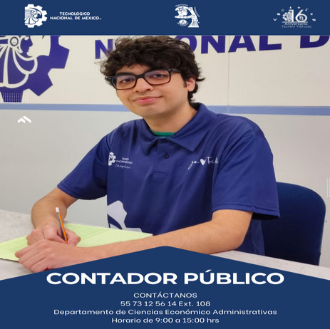

Podemos darle un vistazo al indice del Tecnm Tlahuac 🧙♂️
"LA ESENCIA DE LA GRANDEZA RADICA EN LAS RAÍCES"
"

Podemos darle un vistazo al objetivo general del Tecnm Tlahuac 🧙♂️
"LA ESENCIA DE LA GRANDEZA RADICA EN LAS RAÍCES"
OBJETIVO GENERAL
Formar profesionales competitivos, capaces de diseñar, establecer,
aplicar, controlar y evaluar sistemas de información financiera,
administrativa y fiscal, dentro del marco legal vigente para la toma de
decisiones de las entidades económicas nacionales e internacionales, con
una actitud ética, crítica, emprendedora y de liderazgo, a través de la
investigación y el uso de la tecnología de la información y comunicaciones,
fomentando el desarrollo sustentable.
Podemos darle a el perfil de egreso del Tecnm Tlahuac 🤖
PERFIL DE EGRESO1.-Diseña, implanta, controla, evalúa, asesorara e innova
sistemas de información financiera, administrativa, fiscal y de
auditoría en entidades económicas para la generación, análisis de
información financiera con apego a las Normas de Información Financiera,
nacionales e internacionales y la toma de decisiones.
2.-Audita sistemas financieros, fiscales y administrativos de las
entidades económicas con apego a las Normas Internacionales de Auditoria
vigentes para la emisión de un dictamen.
3.-Aplica el marco legal y pertinente a las características y
necesidades de la entidad económica dentro del campo profesional para
el cumplimiento de las disposiciones vigentes.
4.-Administra estratégicamente los recursos de las entidades
económicas para el cumplimiento de sus objetivos.
5.-Aplica en el ejercicio profesional el código de ética del
contador público vigente para enaltecer a la profesión.
6.-Utiliza las tecnologías de información y comunicación
para eficientar los procesos y la toma de decisiones.
7.-Desarrolla investigación asumiendo una actitud de liderazgo,
compromiso y servicio con su entorno social, para su difusión.
8.-Elabora y evalúa proyectos de inversión de acuerdo a las
características y necesidades del entorno para la generación de
entidades económicas con actitud de liderazgo y compromiso con el
medio ambiente.
9.-Trabaja en equipos multidisciplinarios para el logro de los
resultados de las entidades con un sentido de responsabilidad social
y visión integradora.
10.-Propone estrategias de mercadotecnia que permitan
alcanzar los objetivos de las entidades económicas.
11.- Aplica métodos de análisis de información
financiera para determinar las mejores alternativas de
inversión y financiamiento.
Podemos darle un vistazo a la reticula del Tecnm Tlahuac ❤️